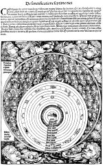

[Hartman Schedel, Liber chronicarum. Norimbergae, Anthonius Koberger, 1493.] -- (1402 A 5)
Toen Hartman Schedel (1440-1514) gedeeltelijk op basis van Jacobus Pergomensis’ Supplementum chronicarum zijn wereldkroniek samenstelde, zal hij wel niet vermoed hebben dat zijn inspanningen slechts door de uiterlijke vorm die eraan gegeven werd beroemd zouden blijven. Het boek werd op groot formaat (de bladspiegel meet zo’n 38 bij 22 centimeter) gedrukt en voor de illustraties werd de hulp ingeroepen van de beste kunstenaars die Neurenberg op dat moment te bieden had, namelijk Michael Wolgemut en Wilhelm Pleydenwurff. Het is zeer bijzonder dat hun namen, in tegenstelling tot die van Schedel, in het colofon vermeld worden. Het boek werd herdrukt in 1497 en kende Duitse uitgaven in 1493 en 1500.
De illustratie op folio 5v, getiteld ‘De sanctificatione septime diei’ (de heiliging van de zevende dag) vertoont het kosmologische beeld van Schedels tijd. De in het midden geplaatste aarde wordt omringd door dertien ‘sferen’, die van water, lucht en vuur (samen met aarde de vier elementen), de maan, Mercurius, Venus, de zon, Mars, Jupiter, Saturnus, de dierenriem, het ‘coelum christallinum’ (de kristallijnen hemel) en het ‘primum mobile’, de eerste kracht, waardoor het heelal in beweging wordt gehouden. Het geheel wordt vanzelfsprekend bekroond door de op zijn troon gezeten God de Vader, omgeven door de koren van engelen. In de vier hoeken zijn de winden Subsolanus, Auster, Aparnas en Zephyrus afgebeeld.
Literatuur
- L. Hain, Repertorium bibliographicum, in quo libri omnes ab arte typographica inventa usque ad annum MD typis expressi ordine alphabetico vel simpliciter enumerantur vel adcuratius recensentur. Stuttgartiae [etc.] 1826-1838. 2 dln in 4 pts, * 14508
Adrian Wilson, The making of the Nuremberg Chronicle. Amsterdam 1976.
| vorige pagina | top pagina |